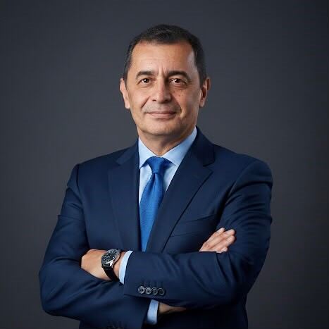

Emilio Palacín Gómez
PMP
Traductor Estratégico
Ingeniero Electricista con +20 años de experiencia. Experto en cerrar la brecha entre gestión tradicional y analítica avanzada mediante Python y PMBOK 8.
Motores de Inteligencia
Algoritmos para predecir fallas críticas y optimizar el EVM. Implementación en 15 días con riesgo cero.
Dashboard: Subestación
Visualización avanzada de KPIs bajo el modelo de Arquitectura Dimensional.